地政学
バルパライソはチリ中部の太平洋港で、首都サンティアゴの海への出口でもあります。海軍、国会、港湾、近隣のビニャ・デル・マールが集まり、内陸国家首都と外洋航路をつなぐ政治的な湾岸都市として機能する要地です。
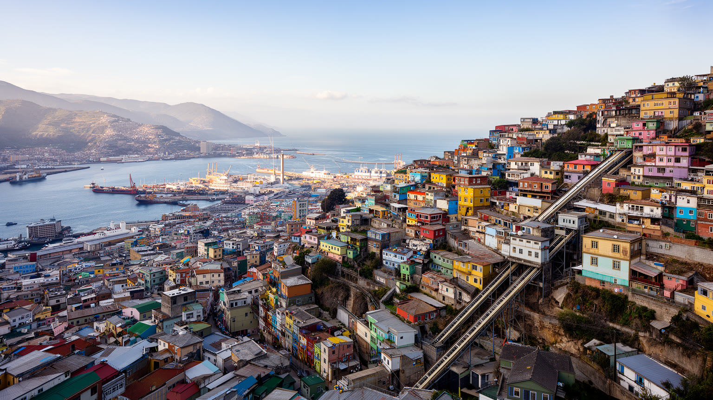
🇨🇱 チリ / 南米太平洋岸 / World City Atlas
太平洋航路の記憶を抱くチリの港町。湾、急斜面の丘、海軍、国会、大学、壁画、世界遺産地区、観光と火災リスクが一つの都市景観に重なります。
都市の骨格
バルパライソは平らな港湾部と、斜面に広がる無数の丘でできています。船、国会、海軍、大学、観光客、住民の通勤、火災への備えが、短い距離の高低差の中で交差します。
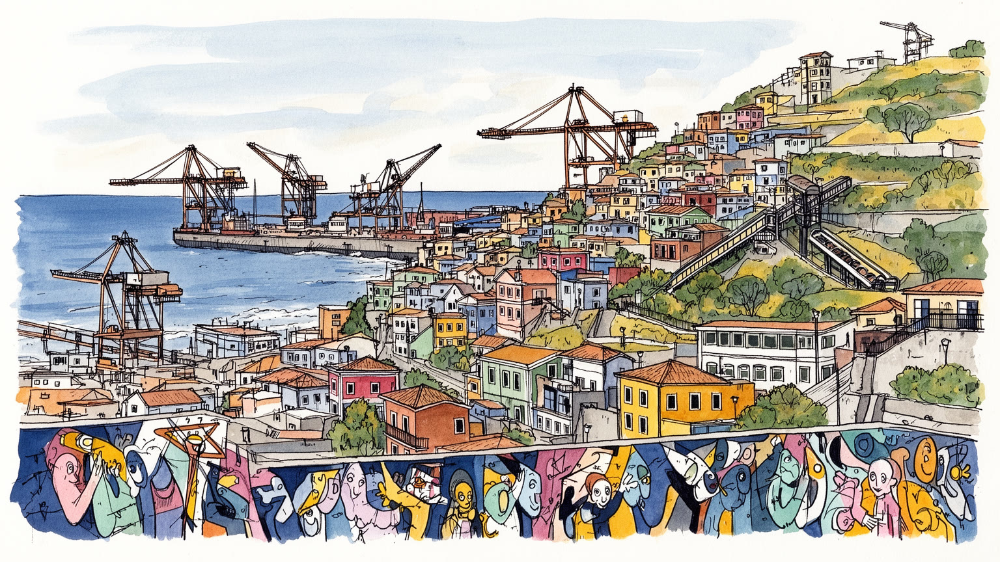
バルパライソはチリ中部の太平洋港で、首都サンティアゴの海への出口でもあります。海軍、国会、港湾、近隣のビニャ・デル・マールが集まり、内陸国家首都と外洋航路をつなぐ政治的な湾岸都市として機能する要地です。
港湾荷役、物流、海軍、大学、公共部門、観光、飲食、文化産業が雇用を作ります。コンテナ化で古い港の仕事は変わり、丘の住民には通勤、家賃、季節雇用、非正規サービス労働の不安も残る都市です。港と街が近い都市です。
丘の壁画、詩人の記憶、港町の音楽、カトリック教会、移民の足跡、学生文化が重なります。色彩ある景観は観光の飾りだけでなく、港で働き、坂を上り、火災を越えて住み続けた人々の記憶でもあります。祈りも今も街に残ります。
旅行者はアセンソール、展望台、壁画、港湾景観を楽しむが、住民には斜面移動、老朽住宅、火災、治安、上下水道、観光地化が現実です。名所と生活の距離が近いほど、都市運営の配慮が問われる港町です。日常も。
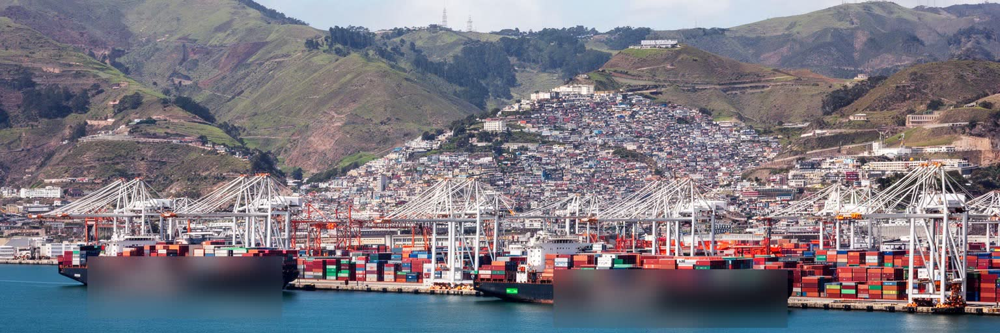
バルパライソを読む入口は、港が都市の一部であるだけでなく、チリ中部を太平洋へ開く政治的な装置であることです。サンティアゴは内陸盆地にあるため、輸出入、海軍、外交の実感は海岸へ降りて初めて見えます。バルパライソ湾には貨物船、タグボート、コンテナ、クルーズ船、漁船が入り、背後の急斜面には住宅、大学、教会、展望台が張り付きます。かつてはホーン岬を回る航路の重要港として栄え、パナマ運河の開通後に役割を変え、現在はコンテナ港、海軍拠点、観光港として機能します。港湾の近代化は効率を高めるが、荷役の雇用、倉庫街、歴史的な街路、海への眺めを変えます。港は外貨を稼ぐ場所であると同時に、騒音、渋滞、土地利用、労働争議を生む場所でもあります。バルパライソの海は美しい背景ではなく、都市の収入、危険、記憶、国際接続を同時に運ぶ現場です。港湾区域の柵の向こうで動く物流を見なければ、丘の上の眺望だけではこの都市を理解できません。太平洋に面する位置は、チリの銅、果物、ワイン、工業品、生活物資を世界へ動かす回路であり、内陸の首都圏が必要とする燃料や商品を受け取る入口でもあります。港の競争力を高める議論は、岸壁の深さや機械だけでなく、労働者の安全、周辺住民の生活、歴史地区の保全と結びつきます。海運の変化は地域の技能や港湾教育にも影響し、次の雇用をどう育てるかが問われます。
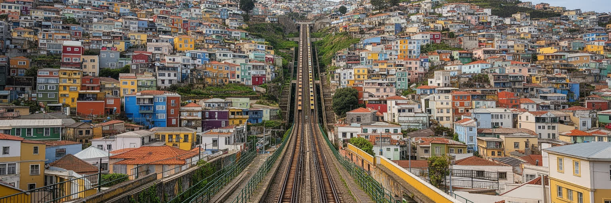
バルパライソの都市形態は、港の平地と四十を超える丘の高低差でできています。海沿いの狭い平地に港湾、商業、行政、交通が集中し、背後の丘には住宅地、学校、小店、壁画、展望台が広がります。丘へ上るアセンソール、階段、曲がった道、バス、コレクティーボは、観光資源である前に住民の生活装置です。わずかな距離でも標高差が大きいため、高齢者、子ども、障害のある人、荷物を持つ労働者にとって移動の負担は重いです。眺望の良い土地は観光や短期滞在に向く一方、斜面の住宅は老朽化、地滑り、火災、水道、道路幅の問題を抱えます。坂の街は写真では魅力的に見えますが、毎日の通勤、買い物、通学、救急車の到着、消防活動には難しさがあります。バルパライソの美しさは、坂を上る身体感覚と切り離せません。都市計画を考える時、観光客が歩く数本のルートだけでなく、丘の奥に住む人の足、バス停、夜道、街灯、階段の補修、災害時の避難路を見る必要があります。アセンソールの保存は歴史遺産の保護であると同時に、住民の移動権を守ることでもあります。丘の上と下が分断されると、港の収入や観光の利益は生活の改善へ届きにくいです。立体的な地形を都市の個性として祝うなら、その地形を日常的に越える人の費用と時間も同じ重さで扱う必要があります。坂道の維持は小さな土木に見えて、都市の公平性を支える基礎でもあります。
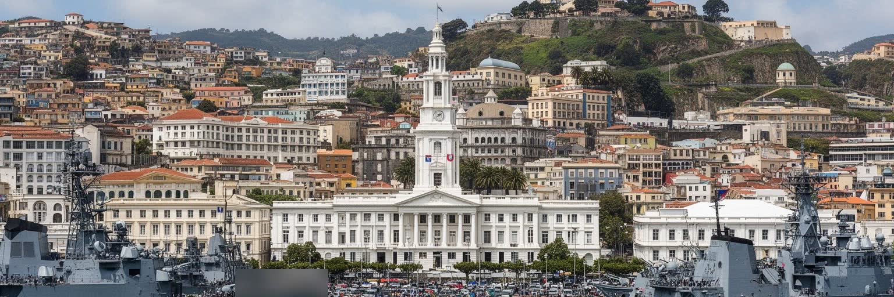
バルパライソは首都ではありませんが、チリの政治制度を読むうえで重要な都市です。国会が置かれ、海軍の歴史と施設が強い存在感を持ち、港湾行政と地方自治が太平洋岸の都市空間に重なります。サンティアゴの大統領府や省庁とは異なり、ここでは国家の制度が港、坂、海軍記念物、議事堂、広場、デモの経路として見えます。国会移転は中央集権への対抗や地域分散を象徴する一方、日常の政策決定の多くは依然としてサンティアゴに集中します。議員、職員、ロビイスト、報道、学生、労働組合が往来することで、バルパライソは政治的な声を受け止める舞台になります。海軍は国家の海洋権益、災害対応、港湾安全保障の象徴であり、都市の儀礼や記憶にも関わります。ただし軍事と政治の存在は、過去の権力、独裁、抗議、治安の問題とも切り離せません。港町の自由な文化と、国家制度の硬い空間が近接する点に、バルパライソの緊張があります。ここで政治を読むことは、議事堂の外観を見るだけでは足りません。港湾労働者の要求、学生運動、住宅地の火災対策、歴史地区の保全、公共交通の不満が、どのように議会や自治体へ届くかを見る必要があります。国家が海へ向かう場所に、市民の生活要求も集まります。制度が都市の中にあるからこそ、政治は抽象的な討論ではなく、坂道、広場、バス、港湾計画に現れます。議会都市であることは、地域の問題を全国へ届ける責任も伴います。
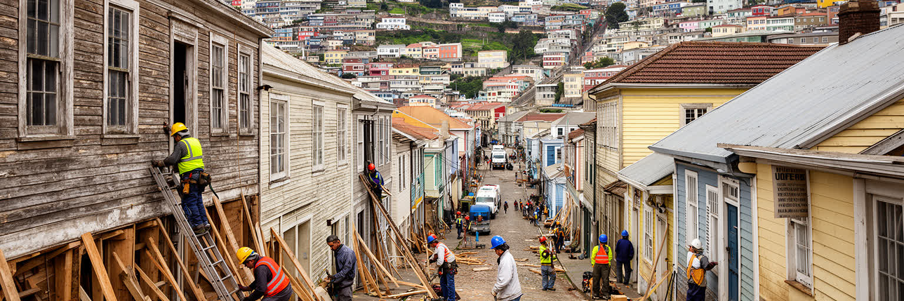
バルパライソの歴史地区は、十九世紀から二十世紀初頭の太平洋交易、移民、商館、倉庫、金融、住宅、ケーブルカーが重なった港町の記憶を残します。世界遺産として評価されるのは、単独の記念碑だけではなく、丘と港が作る都市景観、路地、階段、展望、色彩、生活の層です。ですが保存は簡単ではありません。古い建物は維持費が高く、所有関係が複雑で、火災や地震、塩害、雨、空き家化に弱いです。観光客が増えるほど、宿泊施設、飲食店、土産物店、短期賃貸が増え、住民の家賃や騒音、日常の買い物環境に影響します。歴史地区を絵になる背景としてだけ扱うと、建物を直し、階段を掃除し、隣人関係を保ち、消防に備える人の生活が見えなくなります。保存とは時間を止めることではなく、古い街を住み続けられる状態に更新することです。港湾拡張や再開発の圧力も、景観保全とぶつかります。バルパライソに必要なのは、観光収入を建物の補修、公共空間、消防、住宅支援へ戻す仕組みです。世界遺産の価値は、訪問者の写真の量ではなく、住民がその場所で暮らし続け、港町の記憶を使い直せるかで測られます。壁の色や古いファサードだけでなく、商店、学校、教会、路地の会話、祭り、港の音が残る時、保存は生きた都市政策になります。遺産という言葉を掲げるだけでは、老朽化した階段も高い家賃も解決しない課題です。
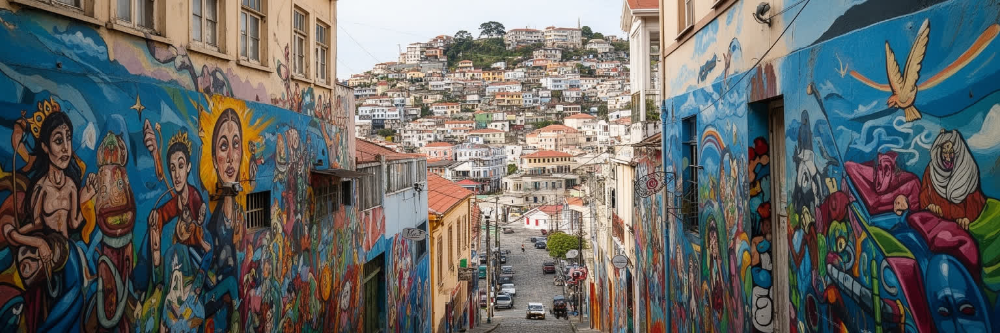
バルパライソの文化は、博物館の中だけでなく壁面、階段、広場、酒場、大学、詩の記憶、港湾労働の言葉に広がっています。色彩ある壁画は観光客に強い印象を与えるが、単なる装飾ではありません。政治的な主張、地域の誇り、移民の記憶、海の労働、若者文化、反権力の感覚が、斜面の壁を都市の媒体にしてきました。詩人パブロ・ネルーダの家として知られるラ・セバスティアーナの周辺にも、文学と眺望と観光が重なります。大学の多さは学生の議論、音楽、出版、デザイン、夜の経済を生み、港町の荒さと創造性を結びつけます。一方で、壁画が商品化されると、住民の生活空間が撮影の背景になり、家賃上昇や騒音を招くこともあります。文化を都市の成長戦略にするなら、作り手の仕事、制作場所、住民の同意、公共空間の維持を考えなければなりません。バルパライソの魅力は、整いすぎていない街路にありますが、その荒さを貧困や老朽化の放置と混同してはいけありません。壁が語る都市であるからこそ、誰が描き、誰が消し、誰が利益を得るのかが問われます。文化は観光の入口であると同時に、都市の不満と希望を表現する公共言語でもあります。色彩を楽しむことと、そこに住む人の権利を尊重することは、同じ都市理解の両輪です。壁画の前で立ち止まる時間は、港町の声を聞く時間でもあります。表現の自由を守ることは、若い作り手が都市に残る条件にもなります。
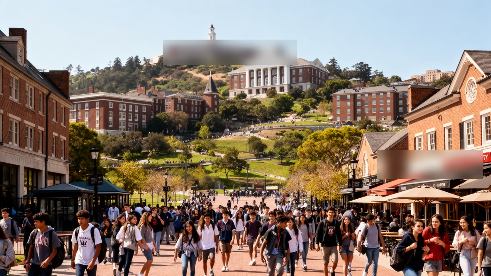
バルパライソは港町であると同時に、チリ有数の大学都市でもあります。大学、専門学校、研究機関は、若者を国内各地から引き寄せ、下宿、食堂、書店、印刷、音楽、討論、デザイン、夜の店を支えます。学生は都市に活気を与えるが、家賃、交通、治安、奨学金、学費、就職の不安も抱えます。チリの学生運動は教育費、格差、公共性をめぐる政治的な力を持ち、バルパライソの広場や議会周辺はその声が見える場所になります。大学の存在は、港湾と観光だけに依存しない知識産業や創造産業の基盤でもあります。建築、海洋、工学、人文、芸術、教育の人材が、都市の保存、物流、災害対策、文化政策に関わる可能性を持ちます。しかし若者が学んでも、安定した仕事や住まいがなければ、才能はサンティアゴや国外へ流れます。大学都市としての価値は、学生を一時的な消費者として扱うことではなく、都市の問題を共に解く住民として受け入れることにあります。港の労働、丘の住宅、世界遺産の保存、火災対策、観光の管理は、研究と実践が結びつきやすい課題です。バルパライソが若い都市であり続けるには、学生が学び、働き、住み、文化を作る余地を守る必要があります。大学と街の関係が深まるほど、港町の未来は外から与えられる開発ではなく、内部の知恵で組み立てられます。若者の声は時に騒がしく見えますが、古い都市が変化を受け入れるための重要な力です。
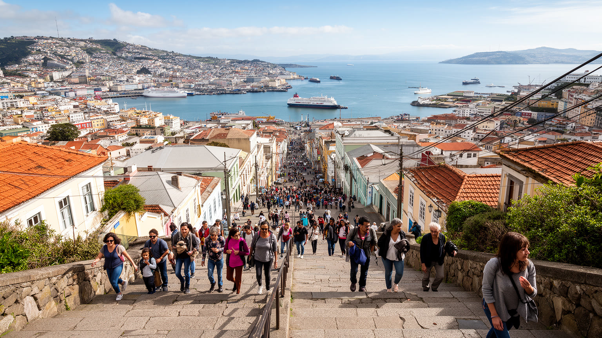
バルパライソ観光は、丘の展望、壁画、アセンソール、港湾の眺め、ネルーダの家、海鮮、夜の音楽を短い距離で巡れる点に強みがあります。サンティアゴから比較的近く、隣接するビニャ・デル・マールの海浜リゾートとも組み合わせやすいです。旅行者にとって、坂道を歩き、色彩ある住宅を見上げ、湾を見下ろす体験は忘れがたいです。しかし、その魅力は住民の生活空間そのものでもあります。観光客が増えると、路地の混雑、写真撮影、短期賃貸、夜間騒音、治安不安、飲食価格の上昇が起こりやすいです。店やガイドには収入が生まれる一方、収益が修繕や公共サービスに十分戻らなければ、住民の負担だけが増えます。観光地としての成功は、訪問者を増やすことだけではなく、住民が市場、学校、病院、バス停、階段を使い続けられることにかかっています。バルパライソでは、名所と生活があまりに近いため、観光マナーと都市管理が直接暮らしに響きます。歩く旅を豊かにするには、見晴らしの良い場所だけでなく、地域の店、公共交通、歴史説明、夜の安全、ゴミ処理を整える必要があります。観光客が丘を消費するだけでなく、港町の労働、火災リスク、保存費用、社会的な格差を知るなら、旅はより深いものになります。バルパライソの観光は、眺望と日常の距離を丁寧に扱えるかで成熟度が決まります。写真を撮る道は、誰かの通学路であり、買い物の帰り道でもあります。
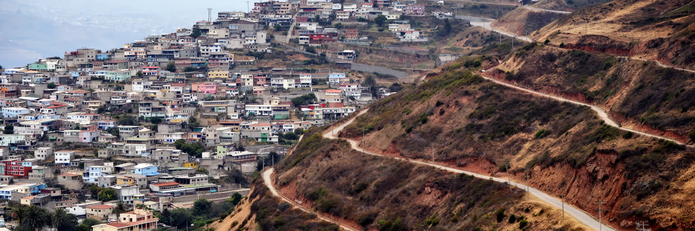
バルパライソの斜面住宅は、都市の魅力であると同時に大きなリスクを抱えます。乾いた夏、強い風、急斜面、狭い道路、老朽住宅、電気配線、植生、非公式な建築が重なると、火災は短時間で広がります。チリは地震国でもあり、港湾都市は津波、斜面崩壊、インフラ破損にも備えなければなりません。観光で有名な丘の景観の背後には、消防車が入りにくい路地、水圧の問題、避難路の不足、保険に入れない住宅、低所得世帯の再建負担があります。災害は自然現象だけではなく、貧困、住宅政策、土地利用、行政の監督、地域のつながりによって被害の大きさが変わります。バルパライソの防災を考える時、住民を危険な場所から単純に追い出すだけでは解決しません。働く場所、学校、親族、交通、家賃を含めた移転や改修の選択肢が必要になります。斜面に住む人が安全に暮らすには、道路、消火栓、階段、街灯、排水、ゴミ処理、植生管理、住宅補修が日常的に維持されなければなりません。災害後の支援も、仮設住宅や寄付だけでなく、生活再建、心のケア、仕事、学校への復帰を含みます。美しい港町を守るとは、写真に残る街並みを守るだけでなく、火災の前に危険を減らし、被害後に住民が戻れる仕組みを作ることです。斜面都市の価値は、危うさを隠さず、弱い人から安全を高める政策で支えられます。日頃の訓練と近所の連絡網も、急な坂の街では命を守る基盤になります。
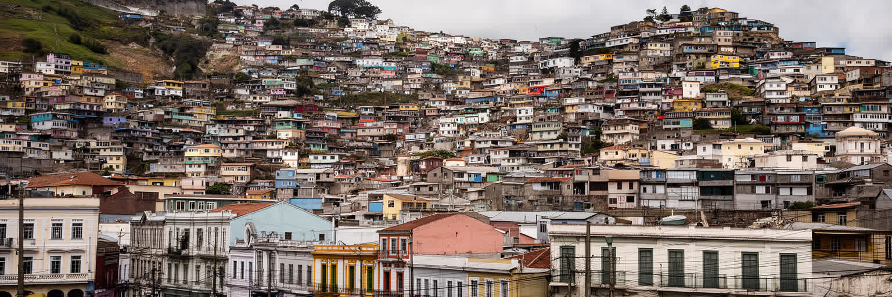
バルパライソは詩的で自由な港町として語られやすいが、社会問題も深いです。人口減少、貧困、老朽住宅、失業、非正規労働、治安不安、薬物、公共空間の荒廃、観光地化による家賃上昇が地区ごとに異なる形で現れます。海沿いの平地や観光客が歩く丘だけを見ていると、奥の住宅地、周辺の斜面、若者の就職難、高齢者の孤立は見えにくいです。港湾経済は都市に収入をもたらすが、効率化によって労働の数や質は変わり、安定した仕事を得られない人もいます。大学や文化産業は希望を生む一方、学歴や人脈に届かない若者には不安が残ります。観光は小さな店に収入を与えるが、街を外から見られる商品へ変え、住民の生活費を押し上げることもあります。社会政策は、治安対策だけでは足りません。住宅改修、職業訓練、若者の文化活動、公共交通、保育、医療、依存症支援、地域の防災をつなげる必要があります。バルパライソの格差は、丘の上と下、観光地と生活地、港の正規雇用とサービス業、サンティアゴへ出る人と残る人の差として見えます。都市の魅力を守るには、貧困や荒廃を風景の味として消費しない姿勢が欠かせません。色彩ある街を本当に豊かにするのは、壁の明るさではなく、住民が安全に働き、学び、年を重ねられる条件です。港町の自由さは、生活の不安を放置してよい理由にはなりません。美しい坂の先まで公共サービスが届くかが、都市の信頼を左右します。
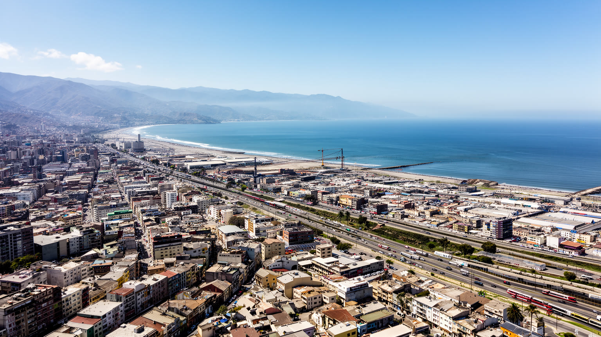
バルパライソは単独で閉じた都市ではなく、ビニャ・デル・マール、コンコン、キルプエ、ビジャ・アレマナなどと連なる沿岸・内陸都市圏の一部です。バルパライソが港、国会、海軍、歴史地区、大学の重みを持つ一方、ビニャ・デル・マールは海浜リゾート、商業、ホテル、住宅地として強い存在感を持ちます。内陸側の都市は住宅、通勤、サービス、教育の受け皿になり、鉄道、バス、高速道路がサンティアゴとも結びます。都市圏で見ると、働く場所、住む場所、学ぶ場所、遊ぶ場所は自治体境界を越えて分かれています。港湾計画、海岸の観光、不動産開発、公共交通、治安、災害対策は一つの自治体だけでは処理しにくいです。観光客はバルパライソとビニャを一続きに訪れるが、住民にとっては家賃、学校、病院、通勤時間、海岸へのアクセスが生活圏を決めます。近隣都市との役割分担は、魅力であると同時に格差を生みます。リゾート的な海岸と、老朽化した港町の斜面が近接することで、同じ湾岸でも投資の向かう場所が異なります。広域交通を整え、住宅と雇用を分散し、災害時に自治体を越えて助け合う仕組みが必要です。バルパライソを都市圏として読むと、港町の問題は港町だけの問題ではなく、チリ中部沿岸全体の成長、観光、住まい、環境の問題として見えてきます。湾岸の将来は、自治体ごとの競争よりも、役割の違いを認めた調整で決まります。
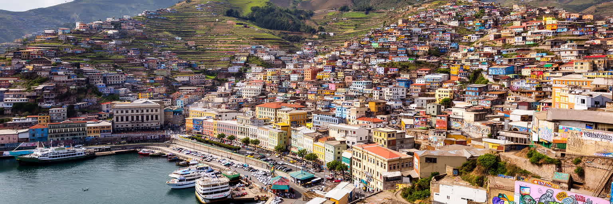
バルパライソは、港町のロマンだけでは読めない都市です。太平洋航路、国会、海軍、コンテナ港、大学、壁画、世界遺産、坂の住宅地、火災リスク、観光、社会問題が短い距離に重なっています。湾を見下ろす美しい景観は、港湾労働、斜面移動、住宅の老朽化、公共交通、消防、保存費用によって支えられます。サンティアゴに近いことは経済的な強みですが、首都への依存や人材流出も生みます。世界遺産の名声は観光を呼ぶが、建物の修繕と住民の生活を守れなければ、街は消費される背景になってしまいます。壁画や詩の記憶は自由な都市イメージを作りますが、その自由は不安定な雇用や貧困を美化する理由にはなりません。バルパライソを読むには、丘の色彩と港の機械、議会の制度と路地の生活、旅の楽しさと災害への備えを同時に見る必要があります。この都市の価値は、整然とした近代都市ではなく、異なる時代と機能が衝突しながら共存している点にあります。だからこそ、開発、保存、観光、防災、社会政策を別々に扱うと、都市の核心を見失います。港を強くすることは住民の暮らしを圧迫してはならず、観光を伸ばすことは住宅を失わせてはなりません。バルパライソの未来は、丘と港を一つの生活圏として扱えるかにかかっています。海を見下ろす都市は、海へ向かう国の玄関であると同時に、坂を上り下りする人々の日常の集合でもあります。